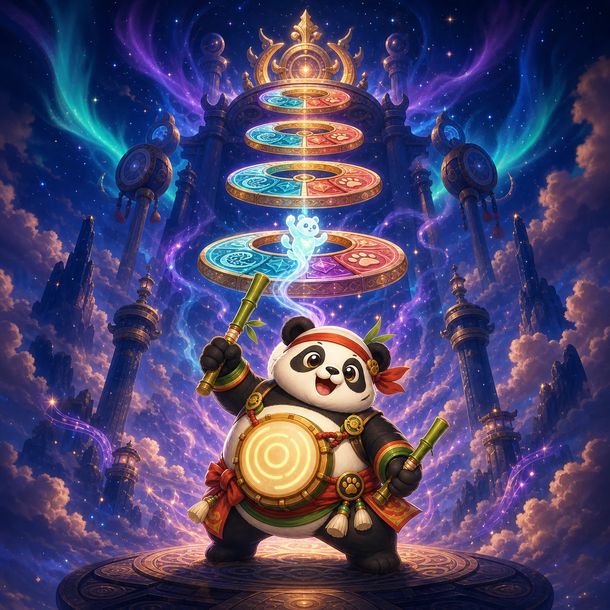
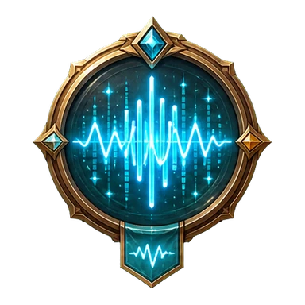

The silent aurora towers
Panko's spectrum drums have gone quiet. Each rescued spirit restores one patterned tower and carries its pulse to the crown.

Pulse Panko's spectrum spirit upward through rotating emblem gates.
Match wave, sun, diamond, and paw at the scan point to restore all thirty towers.
This private build explains the complete precision loop without making the game publicly indexable.
Panko's spectrum drums have gone quiet. Each rescued spirit restores one patterned tower and carries its pulse to the crown.
Tap, click, Space, Enter, or Arrow Up once for one identical lift. Release before pulsing again.
Cyan wave, gold sun, violet diamond, and coral paw always keep distinct emblems and textures.
A cleared gate becomes a safe resting beat. Watch the scan marker, then commit when your emblem arrives.

Drag the rail and choose an unlocked tower.
Spend Star Notes on permanent pulse tuning.
Choose a tuning. Costs and your balance stay visible.
A cosmetic trail with no timing advantage.

Continue resumes the exact spirit, gate angles, timer, and Resonance. Returning to Towers ends this run.